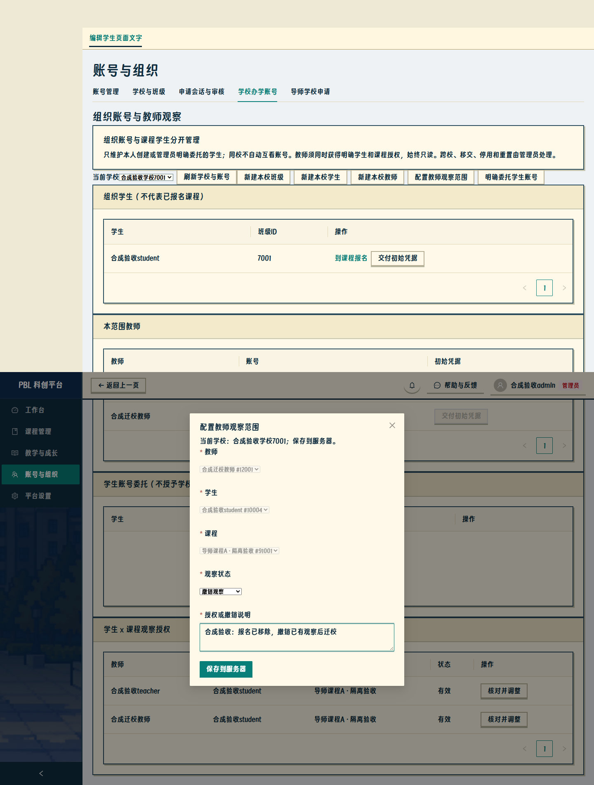
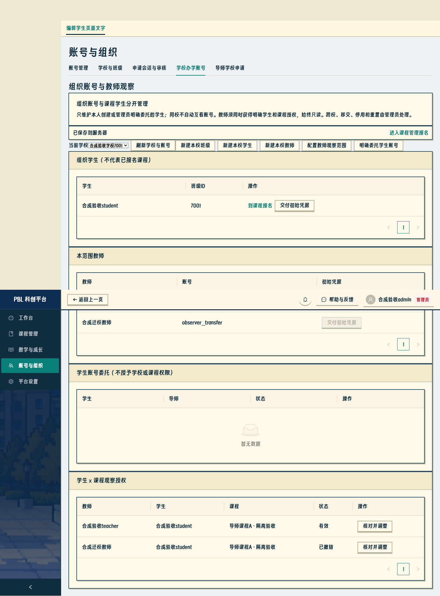
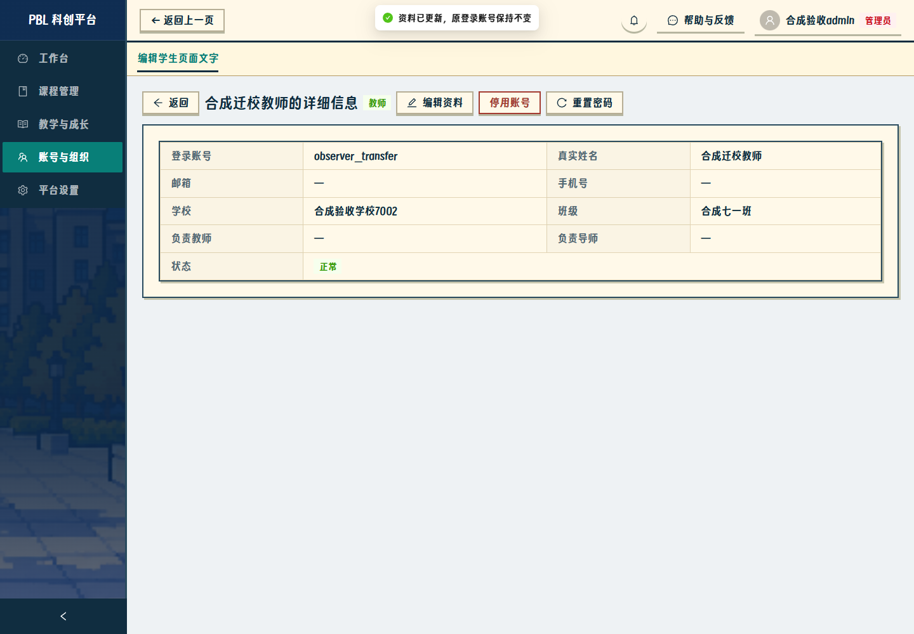
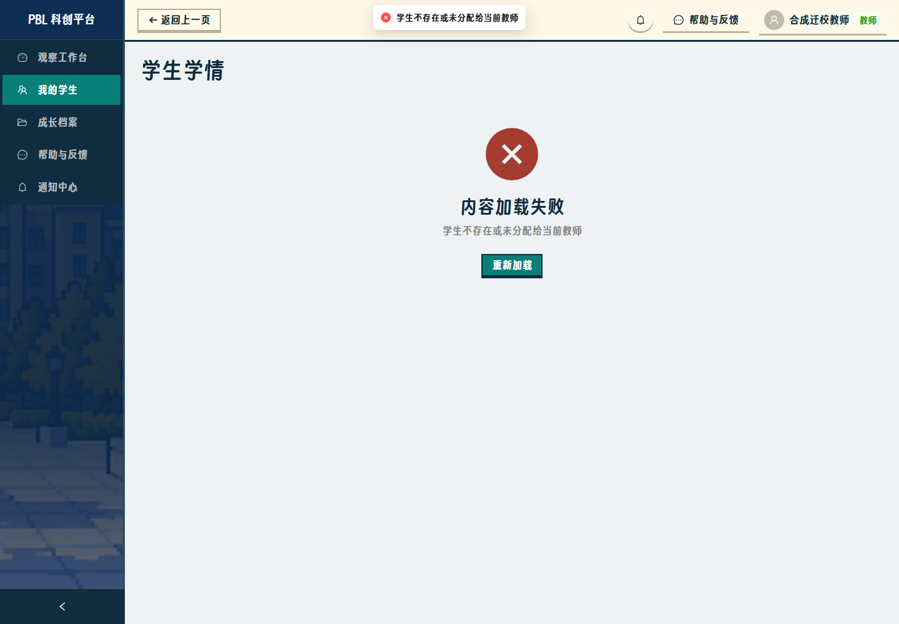

观察授权撤销与教师迁校
2026-10-18，仅修此链路。截图来自新隔离Express/SQLite及真实Edge，非4187数据改造。拒绝页面是权限回归通过的预期结果。
本次后端463、前端139、相关浏览器16业务场景、lint及两种构建通过。本次无新增迁移，已有1032–1034保持。
1. 正常移除报名后，在既有授权行选择撤销；原对象锁定，不需重新报名。
2. 撤销成功，保留原记录及撤销状态，未新建空授权。
3. 原职责明确撤销后，管理员网页保存迁校，教师账号保持。
4. 真实重新登录后，教师仍不能查看原校学生；预期拒绝，测试通过。
5. 学生停用、不在新增候选中，既有行仍能显示原三元对象并完成撤销。